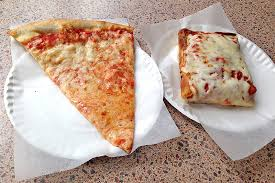
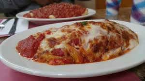
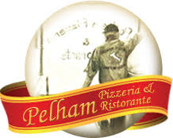
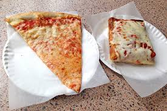
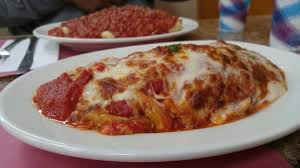
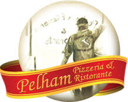
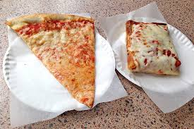
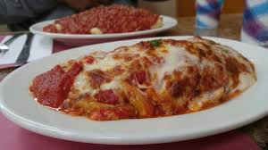
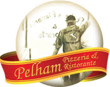

Key Ingredients
113 Fifth Ave
Pelham, NY 10803
914-738-3554
Delivery: No
Alcohol: Beer & Wine Available



113 Fifth Ave
Pelham, NY 10803
914-738-3554
Delivery: No
Alcohol: Beer & Wine Available
Located on the main drag in Pelham, NY, Pelham Pizza has been serving old school NY-style pizza for over 40 years.
Slices are readlily available, and there are numerous choices. Serious Eats listed the Sausage slice as one of the Best 100 slices in the US, but for me the star is the Chicken Parm slice. It comes topped with small cubes of a chicken parmiggiano cutlet and is layered with extra sauce and mozzarella to make one of the tastiest and filling slices you'll ever have.
If you're not in the mood for a slice, there is a wide selcetion of calzones, stromboli, and classic Italian entrees avalable that will leave you happy.
TL;DR
...for me the star is the Chicken Parm slice...